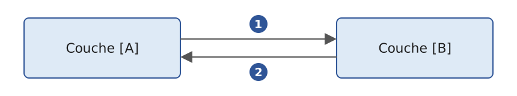
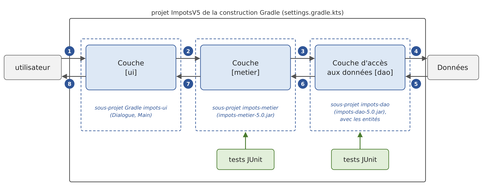
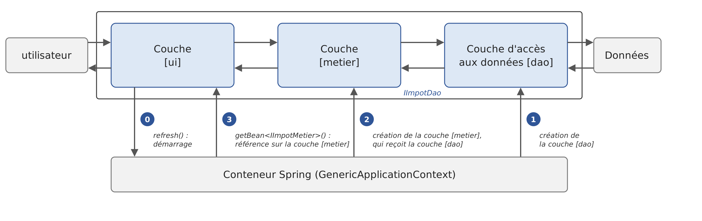

6. Layered Architectures
6.1. Introduction
Let’s revisit the latest version of the tax calculation application (version 3, Chapter 5). Stripped down to its essentials, its main program had the following structure (simplified diagram):
This program combines three types of processing found in most applications:
- retrieving data stored in files, databases, etc.: lines 1–9;
- user interaction: lines 13–14 (input) and 17 (output);
- the use of a business algorithm, the tax calculation: line 17. This calculation was previously performed by the abstract class [AbstractImpot], the parent class of [FileImpot] and [JsonImpot]: in version 3, data reading and calculation are still combined within a single object.
Practical experience has shown that isolating these different processing steps into separate classes improves application maintainability. The architecture of an application structured in this way is as follows:

This architecture is called “three-tier architecture.” The term “tier” normally refers to a part of the application that runs on a different machine. When the parts are on the same machine, the term “layered architecture” is used instead:
- The [metier] layer contains the application’s business rules. For our application, these are the rules used to calculate a taxpayer’s tax. This layer requires data to function:
- tax brackets, which change every year;
- the number of children, the taxpayer’s marital status, and annual income;
- the data access layer, or [dao] (DAO = Data Access Object), provides data already stored in files or databases. This includes the tax brackets, as in version 3 of the application;
- the user interface layer, or [ui] (UI = User Interface), provides the data entered by the user and displays the results to the user. This applies here to the number of children, marital status, and the taxpayer’s annual income.
In general:
- the [dao] layer handles access to persistent data (files, databases) or non-persistent data (network, sensors, etc.);
- the [ui] layer handles interactions with the user, if there is one;
- the three layers are made independent of one another through the use of interfaces.
We will revisit the [Impots] application, which we have already examined several times, to give it a layered architecture. First, we need to define the interfaces for the application’s various layers.
6.2. The Interfaces of the [Impots] Application
Remember that an interface defines a set of function signatures and properties. The classes that implement the interface provide their implementation.
Let’s return to the layered architecture of our application:
In this type of architecture, the user often takes the initiative. The user makes a request in [1] and receives a response in [8]. This is called the request-response cycle. Let’s take the example of calculating a taxpayer’s tax. This will require several steps:
- The [ui] layer asks the user for their marital status, number of children, and annual salary. This is the [1] operation described above;
- Once this is done, layer [ui] asks layer [metier] to calculate the tax. To do this, it sends the data it received from the user to that layer. This is operation [2];
- The [metier] layer needs certain information to complete its task: the tax brackets. It requests this information from layer [dao] via the path [3, 4, 5, 6]: [3] is the initial request, and [6] is the response to that request;
- With all the data it needed, layer [metier] calculates the tax;
- The [metier] layer can now respond to the request made by the [ui] layer in [2]. This is the [7] path;
- the [ui] layer formats this result and then presents it to the user. This is the path [8];
- One could imagine that the user might run tax simulations and want to save them. They would use the same path, [1-8], to do so.
As seen in this description, a layer uses the resources of the layer to its right, never those of the layer to its left. Consider two adjacent layers:

The layer [A] makes requests to the layer [B]. In the simplest cases, a layer is implemented by a single class. But an application evolves over time, and the layer [B] may successively have different implementation classes: [B1], [B2], and so on. If the [B] layer is the [dao] layer, it may have an initial implementation, [B1], that retrieves data from a file. A few years later, you might want to store this data in a database: in that case, you create a second implementation class, [B2]. If, in the initial application, the [A] layer worked directly with the [B1] class, we would be forced to partially rewrite the code for the [A] layer. For example, suppose we wrote something like the following in the [A] layer:
- Line 1: An instance of the [B1] class is created;
- line 3: data is requested from this instance.
If the new implementation class [B2] has functions with the same signature as the class [B1], you’ll need to change all instances of [B1] to [B2]. This is the best-case scenario, and it is quite unlikely if you have not paid attention to these signatures. In practice, it is common for the classes [B1] and [B2] to have different function signatures, meaning that a significant portion of the [A] layer must be rewritten.
This issue can be mitigated by inserting an interface between the [A] and [B] layers. This locks down, within an interface, the function signatures that the [B] layer exposes to the [A] layer. The previous diagram becomes the following:

The [A] layer no longer communicates directly with the [B] layer but with its interface, [IB]. In the code for the [A] layer, the implementation class [Bi] of the [B] layer now appears only once, when the object that implements the [IB] interface is created. After that, the [IB] interface—and not its implementation class—is used. The previous code becomes:
- Line 1: An instance of [ib] that implements the [IB] interface is created by instantiating the [B1] class. The variable's type is explicitly declared: without it, type inference would assign the type [B1] to [ib];
- Line 3: Data is requested from the [ib] instance.
Now, if we replace the implementation [B1] of the layer [B] with an implementation [B2], and both implementations conform to the same interface [IB], only line 1 of the [A] layer needs to be modified. This is a major advantage that, on its own, justifies the systematic use of interfaces between two layers.
We can go even further and make the [A] layer completely independent of the [B] layer. In the code above, line 1 poses a problem because it hard-codes the class name [B1]. Ideally, the [A] layer should receive an implementation of the [IB] interface without having to specify a class name. This would be consistent with the diagram above: the [A] layer interfaces with the [IB] interface, and there is no reason why it would need to know the name of the class that implements that interface.
This is what dependency injection (DI) enables. The previous architecture evolves as follows:

A cross-cutting component—the dependency injection container—creates the objects that implement the layers and connects them to one another: it passes the [A] layer a reference to the object that implements the [B] layer. The code for the [A] layer then takes the following form:
- Line 2: The [A] layer receives, via its primary constructor, a [ib] instance that implements the [IB] interface. The keyword
***[val]***preceding the parameter makes it a private property of the class: where Java requires a field, a constructor, and an assignment, Kotlin requires only a single line. It is not the*[A]* layer that creates this instance, but the container; - Line 6: Data is requested from the [ib] instance.
The implementation class [B1] no longer appears anywhere in the code of the [A] layer. When the implementation [B1] is replaced by a new implementation [B2], nothing will change in the code of the [A] layer: the only thing that will change is the single location in the application where the container is told which class implements [IB]. This location can even read the name of the implementation to use from a configuration file.
In the JVM, dependency injection was popularized in the early 2000s by the Spring framework, whose configuration was then written in XML files. The Spring Framework, now in version 7, remains the industry standard, and it treats Kotlin as a first-class language: it provides Kotlin extensions to its API, and Kotlin is one of the two languages used in its documentation. It forms the basis of Spring Boot, which we will use in Chapter 13, “Web Services.” We’ll use its container in version 5 of the application (there are others: CDI, the Jakarta standard EE, Google Guice, or, specific to Kotlin, Koin and Kodein). The combination of “interfaces and dependency injection” significantly improves application maintainability by making the layers independent of one another.
Let’s return to the layered architecture of our application. In simple cases, we can start with the [metier] layer to discover the application’s interfaces. To function, the application needs data:
- already available in files, databases, or via the network. This data is provided by the [dao] layer;
- not yet available. In that case, it is provided by the [ui] layer, which obtains it from the user.
What interface should the [dao] layer provide to the [metier] layer? The [dao] layer must provide the tax brackets to the [metier] layer. In our application, the [dao] layer uses existing data but does not create new data. Its interface could be as follows:
- Line 1: The interface is located in the [dao] package. As we will see, we will store the [IImpotDao.kt] file in a [dao] folder;
- Line 9: The [IImpotDao] interface declares the [tranchesImpot] property, which provides the tax brackets to the [metier] layer. A Kotlin interface can declare properties, not just functions: an interface property [val] is abstract; each implementing class specifies how it obtains its value. Whereas Java exposed read-only data via a method [getTranchesImpot()], following the JavaBeans convention, Kotlin declares it for what it is: a read-only property. From Java’s perspective, this property is actually a method [getTranchesImpot()];
- slices are rendered as a [List<TrancheImpot>] list rather than an array. In Kotlin, [List] is a read-only interface: it has no [add], [set], or [remove], which belong to the [MutableList] interface (Chapter 5). The recipient of the list cannot therefore modify it, whereas the elements of an array can always be modified by the recipient;
- line 3: imports the type [TrancheImpot], defined in the package [entites]:
A tax bracket is represented by a data class ([data class], Chapter 4), the Kotlin equivalent of a Java record. The compiler generates the properties [limite], [coeffR], and [coeffN], as well as the functions [equals], [hashCode], [toString], [copy], and [component1]…[component3] (for destructuring). We write [TrancheImpot(limite, coeffR, coeffN)] to create a slice. Properties are declared as [val]: a slice cannot be changed once created (a data class can have [var] properties, but this is not common practice). All three properties are of type [BigDecimal], the Java class for exact decimal numbers, which Kotlin uses directly: a [Double] cannot exactly represent 0.068 or 291.09. Since a *[BigDecimal] is itself immutable, a slice is completely immutable. A class with [var] properties would have allowed it to be modified; we’ll see that this inability eliminates a side effect of an older way of writing the [metier]* layer.
What interface should the [metier] layer present to the [ui] layer? Let’s review the interactions between these two layers:
- The [ui] layer asks the user for their marital status, number of children, and annual salary. This is operation [1] in the schema;
- Once this is done, the [ui] layer asks the [metier] layer to calculate the tax. To do this, it sends the data it received from the user to the [metier] layer. This is operation [2].
The interface for layer [metier] might look like this:
- Line 1: Everything related to the [metier] layer is placed in the [metier] package;
- Line 6: The [IImpotMetier] interface declares only one function, which calculates a taxpayer’s tax based on their marital status, number of children, and annual salary. An interface function without a body is abstract, and, like any Kotlin member without a visibility modifier, is public: there is no need to write [public abstract]. The result is [Int]: the tax in euros, without the cents.
We will now examine an initial implementation of this layered architecture.
6.3. Sample Application—Version 4
6.3.1. The Project
Version 4 is a program consisting of several source files that does not use any external libraries. Kotlin does not have a simple equivalent to Java’s source code launcher ([java Main.java]), which compiles a multi-file program in memory and executes it: a multi-file Kotlin program is compiled before it is executed. We therefore create a Gradle project, [ImpotsV4], which is one of the subprojects of the chapter’s Gradle build (Chapter 2). The [06-architectures] folder contains all the projects in the chapter; its [settings.gradle.kts] file lists them:
- lines 3–6: the plugin that allows Gradle to download JDK 25 itself if it cannot find it on the machine (Chapter 2);
- line 8: the name of the root project;
- line 11: the five subprojects in this chapter. A subproject is identified by its path, whose elements are separated by colons: [ImpotsV5:impots-dao] is the subproject of the [ImpotsV5/impots-dao] folder. We will discuss [TestsDemo] and the three subprojects of version 5 later on.
The file [build.gradle.kts] in the root project declares the plugins used by the subprojects, along with their versions, without applying them:
- line 4: the Kotlin plugin for JVM, version 2.4.20. The reference to [apply false] makes it available to the subprojects, which will apply it without repeating its version;
- line 5: a Kotlin compiler plugin that version 5 will need for Spring. We’ll explain this when the time comes.
The [ImpotsV4] subproject has the following directory structure. Each layer occupies a folder:
- The [entites] folder contains types that are common to the [ui], [metier], and [dao] layers: the data class [TrancheImpot], the exception [ImpotException], and the enumeration [CodeErreur] of its error codes;
- the [dao] file contains the interface and classes of the [dao] layer. We will use two implementations of the [IImpotDao] interface: the [HardwiredImpot] class, whose data is hard-coded (version 2), and the [FileImpot] class, which reads data from a text file (version 3). Reading a JSON file—the other option in version 3—will be covered in version 5;
- the folder [metier] contains the interface and the class for the layer [metier];
- the folder [ui] contains the class for the layer [ui];
- The file [Main.kt] creates the layers and links them together;
- the file [DataImpot.txt] contains the tax brackets read by the [FileImpot] implementation of the [dao] layer. It is located at the root of the subproject, which is the current directory of the program launched by Gradle.
In Java, folder names matter: a class in the [dao] package must be located in a folder named [dao]. Kotlin is more flexible: the package is the one declared by the [package] directive in the file, regardless of the folder in which it is located. However, the convention—followed by IntelliJ, IDEA, and this course—is still to organize files into folders that mirror the packages: a file from the [impots.dao] package in a [impots/dao] folder (in a project where all packages start with the same root, the folders for that common root are simply omitted). The [.class] files produced by the compiler, on the other hand, are always organized by package: this is how the virtual machine locates the classes based on their full names.
The file [Main.kt] does not have a [package] directive: it belongs to the root package, which has no name. Its function [main] is compiled into the class [MainKt], the name that the subproject’s build file assigns to the plugin [application]:
- lines 2–4: the subproject applies the Kotlin plugin, without a version (which is provided by the root project), and the [application] plugin, which adds the [run] task;
- lines 7–8: the project details;
- lines 14–21: the compiler configuration, the same as in the previous chapters;
- lines 25–27: the main class, [MainKt], without a package name. There is only one program in this subproject: the [main] property from the previous chapters is unnecessary;
- lines 30–32: the program reads from the keyboard;
- lines 35–38: The programs launched by Gradle write their output to
UTF-8so that accented characters display correctly on Windows (Chapter 2).
Unlike Java, Kotlin allows you to import a declaration of the root package from another package by naming it without a prefix ([import nomDeLaDeclaration]). The convention is still to place only the main program there, which is not imported by anyone.
Run the program from the chapter’s folder using [gradlew -q :ImpotsV4:run]: the path [:ImpotsV4] refers to the subproject, and the task [run] runs with the subproject folder as the current directory. IntelliJ IDEA opens the [06-architectures] folder as a Gradle project and runs [Main.kt] by clicking the green triangle next to its QZXW2HTMLP008697ZQ functionX.
6.3.2. Application entities

We refer to entities as types that span multiple layers. These are generally the classes that encapsulate the data from the [dao] layer. These entities typically extend all the way up to the [ui] layer. The application entities are the data class [TrancheImpot], which has already been presented, and the exception [ImpotException], along with the enumeration of its error codes:
- line 4: an enumeration ([enum class]). As in Java, the values of an enumeration are objects—unique instances of the [CodeErreur] class—and an enumeration can have properties and methods;
- line 5: the five error codes. The semicolon that terminates the list is required when other members follow it. The property [ordinal], inherited from the class [Enum], returns the position of the value in the list: 0 for [ACCES], 4 for [CHAMP3];
- lines 8–9: Each code is associated with a bit. [bit] is a computed property: it has no field; its accessor, [get()], calculates it each time it is read. Kotlin does not have shift operators: [1 shl ordinal] (“shift left”) is equivalent to Java’s [1 << ordinal], and is equal to 1, 2, 4, 8, and 16. These powers of 2 can be combined with the infix function [or] (Java’s [|]): the code [CHAMP2.bit or CHAMP3.bit] (8 + 16 = 24) means that fields 2 and 3 of a row are incorrect. The exception’s error code remains a simple integer, which all implementations of the [dao] layer can use;
- Lines 11–14: The function [noms] converts the code names contained in a bit string— “CHAMP2, CHAMP3” for 24. It does not use any specific value from the enum: it is placed in the companion object and is called as a static Java method, [CodeErreur.noms(24)]. The property [entries] (Kotlin 1.9) is the list of enum values; it replaces the function [values()], which creates a new array on every call. [(code and it.bit) != 0] is true if the bit corresponding to the value of [it] is present in [code] ([and] is the Java equivalent of [&]). The values retrieved by [filter] are then assembled by [joinToString], using the separator [", "] and a lambda that returns the name ([name]) of each value. The body of the function is an expression: the function has no curly braces, and its result follows the [=] sign.
- line 5: an application-specific exception derives from the class [RuntimeException]. In Kotlin, the question of choosing between checked and unchecked exceptions does not arise: the language has no checked exceptions (Chapter 3), no function declares the exceptions it throws, and no caller is required to catch them. Deriving from
*[RuntimeException]* rather than*[Exception]*remains the standard practice, as this ensures that an exception is viewed consistently from Java code; - lines 6–10: The primary constructor has three parameters. [message] and [cause] are simple parameters passed to the parent class’s constructor (line 11); [code], declared as [val], is also a read-only property of the exception. The cause—the original exception, if there is one—will be accessible via the property [cause], inherited from [Throwable];
- lines 8–10: Thanks to the default parameter values, this single constructor replaces the two constructors in the Java version—one with a message and a code, the other with the cause as well. With named arguments, we write [ImpotException(message, code = 2)] when there is no cause, and [ImpotException(message, e, 1)] when there is one;
- line 10: the comma after the last parameter (“trailing comma”) is allowed; it makes it easier to add a parameter;
- An exception is serializable (the class [Throwable] implements the interface [Serializable]). The Java version declared a [serialVersionUID] field to avoid a warning from [javac -Xlint:all]; the Kotlin compiler does not issue this warning, so we do not declare this field.
In this version, only the [FileImpot] class in the [dao] layer throws [ImpotException].
6.3.3. The [dao] layer
Let’s review the interface of the [dao] layer:
We implement this interface in two different ways. First, with the [HardwiredImpot] class:
- Line 6: The class [HardwiredImpot] implements the interface [IImpotDao]. In Kotlin, the colon is used for both class inheritance and interface implementation: there is no [implements] keyword. Note that the interface is named without parentheses, whereas a parent class is named with its constructor arguments ([RuntimeException(message, cause)]): an interface does not have a constructor;
- Lines 9–16: the implementation of the interface’s property. The keyword [override] is required: the compiler verifies that the property does indeed implement a member of the interface, similar to Java’s optional annotation [@Override]. The property is initialized in its declaration by [listOf], which creates a read-only list. Again, a comma after the last element is allowed;
- Lines 20–22: A private function that creates a segment from three strings. It is declared at the file level, outside the class: [private] makes it visible only within the file [HardwiredImpot.kt]. The extension function [toBigDecimal] from the standard library converts a string to [BigDecimal]; this is the constructor [BigDecimal(String)]. A [BigDecimal] constructed from a string is exact: ["0.068".toBigDecimal()] is exactly 0.068, whereas a [BigDecimal] constructed from a [Double] inherits its imprecision: [0.068.toBigDecimal()], which is derived by converting [Double] to a string, does indeed yield 0.068, but [(0.1 + 0.2).toBigDecimal()] yields 0.30000000000000004. The type of the function’s result, [TrancheImpot], is inferred from the expression following the sign [=].
The [IImpotDao] interface is also implemented by the [FileImpot] class, which reads tax brackets from a text file. The [DataImpot.txt] file is as follows:
Each line describes a tax bracket in the format [limite:coeffR:coeffN]. Numbers are written with a decimal point, regardless of the system language; this ensures the file is readable on all machines. The values are those from the 2004 tax schedule for 2003 income, retained as-is: this is an exercise. The class [FileImpot] is as follows:
- Lines 3–7: Kotlin does not have static imports ([import static] from Java): the standard [import] directive imports classes, enum values, and functions alike. We then write [CHAMP1] instead of [CodeErreur.CHAMP1];
- lines 13–15: the functions in the [kotlin.io.path] package (Chapter 5), which complement the Java functions API and NIO;
- line 19: the primary constructor takes the name of the tax bracket file. Declared as [val], this parameter is also a public, read-only property, [fileName]: it replaces the field and method [getFileName] from the Java version;
- line 22: the interface property. It is not initialized in its declaration: the compiler verifies that it is assigned a value—only once—in the following [init] block;
- lines 24–39: the [init] block is executed when the object is constructed. It reads the file and then extracts the segments from it;
- lines 26–34: In Kotlin,
[try]is an expression: its value is either that of the last expression in the[try]***block—in this case, the list of lines in the file—or that of the[catch]block. The block [catch] throws an exception: its type is [Nothing], the type of expressions that never return a value, and the variable [lignes] has the type [List<String>]*; - line 27: the function [Path] in [kotlin.io.path] creates the file path; it is equivalent to [Path.of]. A relative path is relative to the current directory;
- Lines 28–29: If the file does not exist, a [NoSuchFileException] ([java.nio.file] package) is launched with a message in French. Its three-parameter constructor takes the file name, the name of a possible second file (here, [null]), and the reason for the error. The exception messages for JDK are in English: without this check, the read operation would itself trigger a [NoSuchFileException], whose message would consist solely of the file name;
- Line 31: The [readLines] extension function reads the entire file using UTF-8 and returns a list of its lines. It opens and closes the file itself. For a large file, we would prefer a stream-based read using [useLines];
- Lines 32–34: All input/output errors stem from [IOException]: file missing ([NoSuchFileException]), insufficient permissions ([AccessDeniedException]), file not in UTF-8 format ([MalformedInputException]), etc. The error is wrapped in a [ImpotException] with code [ACCES]; the original exception is retained as the cause (second argument);
- lines 37–39: Reading the lines and parsing them are separate operations, which was not the case in Java. [withIndex] associates each line with its index (starting at 0) in a [IndexedValue] object with properties [index] and [value]; [filter] removes empty lines or lines consisting of spaces ([isNotBlank]) without losing the indices of the others; [map] transforms each of the remaining lines into a slice. The lambda function [map] unpacks its parameter [IndexedValue] into its two components, [(index, ligne)]. The line number, [index + 1], and the line with its leading and trailing spaces removed ([trim]) are passed to the function [tranche]. The result of [map] is a read-only [List];
- line 43: the function that returns the segment described by a line, or throws a [ImpotException] if the line is invalid. This exception is not a [IOException]: it is passed back to the caller as-is;
- line 45: the line is split by [split] using the regular expression [SEPARATEUR]: the separator is a colon, which may be surrounded by spaces. Note: In Kotlin,
***[split(":")]** with a string splits the string itself without interpreting it as a regular expression; you must pass a*[Regex]object for this; - Lines 46–47: A line that does not have three fields is invalid. The error code is passed via a named argument, [code = LIGNE.bit]: there is no cause, and the parameter [cause] retains its default value, [null];
- line 50: conversion of the three fields. [champs.map(::nombre)] applies the function [nombre] to each field ([::nombre] is a function reference; see Chapter 7) and returns a list of three [BigDecimal?] values, which the destructuring assignment distributes into three variables;
- lines 51–57: if a field is incorrect, each incorrect field adds its bit to the error code using the infix function [or], and a [ImpotException] is triggered. Its message provides the line number and the line’s content;
- line 60: at this point, the compiler knows that [limite], [coeffR], and [coeffN] are not [null]; otherwise, the previous [if] would have thrown an exception. Through smart casting, these variables of type [BigDecimal?] are treated as [BigDecimal], the type expected by the constructor of [TrancheImpot]: neither [!!] nor any conversion is necessary;
- lines 65–66: the two regular expressions are created once and for all in the companion object, rather than on each call. They are written as raw strings (["""..."""]), where the backslash does not need to be doubled: [\s*] matches zero or more spaces;
- Lines 69–70: Converting a field to [BigDecimal]. [NOMBRE.matches(champ)] verifies that the entire string matches the regular expression [\d+(\.\d+)?]: one or more digits, optionally followed by a period and more digits. Thus, “0.191” is rejected, as is any negative number. The function [toBigDecimal] is not dependent on the user’s language: it always expects a decimal point. In case of an error, the function returns [null], hence its type [BigDecimal?]. We could have used [toBigDecimalOrNull], which returns [null] for an invalid string, but it also accepts “-1” or “1e3”.
6.3.4. The [metier] layer
Let’s review the interface for this layer:
Its implementation, [ImpotMetier], is as follows:
- Line 8: The class [ImpotMetier] implements the interface [IImpotMetier]. The [metier] layer must collaborate with the [dao] layer: it therefore receives, via its primary constructor, a [dao] reference to the object that implements the [IImpotDao] interface. This parameter is not declared as [val]: it is used only during object construction and does not become a property;
- Line 11: Upon object construction, the [metier] layer requests the tax brackets from the [dao] layer once and for all and stores them in a private, read-only property. Its type, [List<TrancheImpot>], is inferred. Note that the [metier] layer knows the [dao] layer only through its [IImpotDao] interface: it does not know whether the tax brackets come from the code, a file, or, later, a database;
- line 14: the implementation of the interface’s function, with the required keyword [override];
- lines 16–17: the [metier] layer does not trust its callers. The function [require] from the standard library (Chapter 3) throws a [IllegalArgumentException] if the condition is false; the exception message is calculated by the lambda, which is executed only in the event of an error. The message identifies the incorrect parameter;
- lines 19–21: the number of shares. [nbEnfants.toBigDecimal()] converts the integer to [BigDecimal]. A Java class such as [BigDecimal] does not have arithmetic operators, but the Kotlin standard library adds them via extension functions labeled [operator] (Chapter 4): [a + b], [a - b], and [a * b] call [add], [subtract] and [multiply], and [nbParts += DEMI] is written in Java as [nbParts = nbParts.add(DEMI)]. Since a [BigDecimal] is immutable, each operation returns a new object: this is why [nbParts] is a variable ([var]). The number of children is multiplied by 0.5 rather than divided by 2, for the reason given below: 3 children equal 1.5 shares;
- lines 24–25: taxable income and the family quotient. Division by the number of shares can result in an infinite number of decimal places (division by 3, for example): without any specified limit, the [divide] method would then trigger a [ArithmeticException]. [MathContext.DECIMAL128] limits the result to 34 significant digits;
- Line 28: We look for the first income bracket whose threshold is greater than or equal to the family quotient, among all brackets except the last one ([dropLast(1)]). [firstOrNull] returns the first element that satisfies the condition, or [null] if there is none; the Elvis operator [?:] then replaces [null] with the last bracket, [tranches.last()], whose limit (0) is not used. The [BigDecimal] classes implement the [Comparable] interface: Kotlin translates [qf <= it.limite] to [qf.compareTo(it.limite) <= 0]. This line replaces the [for] loop and the [break] from the Java version;
- line 30: the tax. The function [toInt()] of a [BigDecimal] (the Java method [intValue()]) returns the integer part of the result;
- lines 33–36: two constants, stored in a private companion object. They cannot be declared as [const]: only primitive types and strings can be.
A note on the [/] operator. The standard library also defines the [/] operator for [BigDecimal], but it calls [divide(other, RoundingMode.HALF_EVEN)]: the result has the same number of decimal places as the dividend. Thus, [3.toBigDecimal() / BigDecimal.TWO] evaluates to 2, not 1.5, whereas [3.toBigDecimal().divide(BigDecimal.TWO)] does indeed evaluate to 1.5. That is why the code above avoids this operator: it multiplies by 0.5 and explicitly calls [divide] with a [MathContext]. With the [BigDecimal] functions, it’s always best to know exactly what a division operation does.
A common approach in the past was to modify, before the search, the limit of the last range (something like [tranches[tranches.size - 1].limite = qf + 1]) so that the search loop would always stop. This instruction modified the array provided by the [dao] layer: a side effect on data shared by all layers. We could no longer write this here: the [limite] property of a [TrancheImpot] is read-only, and the list containing the segments is also read-only. Modern code simply takes the last segment when no boundary is suitable, without modifying the data it receives.
6.3.5. The [ui] layer
In versions 2 and 3, the user interface was written in the main program, following the creation of the calculation object. The only difference was how this object was created. We now isolate this user interface in the [ui] layer, which knows the [metier] layer only through its interface:
- Line 6: The dialog has no state of its own. In Java, we created a class named [final] with a private constructor, containing only static members. Kotlin uses the object declaration ([object], Chapter 4) for this purpose: [Dialogue] is both a class and its sole instance, created upon first use. Its functions are called like static methods: [Dialogue.run(metier)];
- lines 9–10: the question asked of the user, a private constant ([const val]);
- lines 13–18: the help message is a raw string, delimited by three quotation marks. It can span multiple lines; [trimIndent] (Chapter 5) removes the common indentation from the lines, as well as the first and last lines if they are empty: the text does not begin or end with a line break. The result of [trimIndent] is calculated at runtime: the string cannot be declared as [const];
- line 24: the function [run] receives the layer [metier] in the form of its interface [IImpotMetier]. It knows nothing about the class that implements it or the layer [dao];
- Lines 27–28: The question is displayed by [print], without a line break, and then [readlnOrNull] reads a line from the keyboard. This returns [null] at the end of the input stream; the safe call to [?.trim()] then also returns [null], which the Elvis operator replaces with the empty string: the end of the stream terminates the dialog just like an empty line;
- line 34: the entered line is split by spaces; the regular expression [\s+] (one or more spaces) ignores multiple spaces;
- lines 40–41: In Kotlin, the operator [] (and [!=]) compares the contents of strings: it calls [equals]*. It is the *[=] operator that compares references. The Java pitfall, where [==] compares references, does not exist;
- lines 46–54: the number of children and the salary must be positive integers or zero. [toIntOrNull] returns [null] if the field is not an integer, and the Elvis operator then replaces [null] with -1. A negative number and an invalid input are thus rejected by the same check. The [entier] method in the Java version, along with its [try]/[catch] variants of [NumberFormatException], has become obsolete;
- line 58: the parameters are correct: the calculation is requested from the [metier] layer. The call is written directly into the string template, between [${...}].
6.3.6. Integrating the Layers
All that remains is to create the layers and link them together. This is the role of the main program [Main.kt]:
- lines 1–9: the file does not contain a [package] directive; its imports specify the classes from the other four packages;
- line 14: the function [main] receives command-line arguments in the array [args]. The argument selects the implementation of the layer [dao]: [hardwired] for class [HardwiredImpot], otherwise the name of the file read by class [FileImpot], with [DataImpot.txt] as the default;
- line 15: [firstOrNull] returns the first argument, or [null] if there is none, which the Elvis operator replaces with the default file name;
- line 16: the variable [metier] is initialized with an expression [try]. Its type is declared: it is the interface [IImpotMetier], not the class [ImpotMetier] that inference would yield;
- Line 18: Creation of the layer [dao]. [if] is an expression: its value is one or the other of the two implementations. This is the only place in the program where the classes [HardwiredImpot] and [FileImpot] are named;
- line 20: creation of the layer [metier], which receives the layer [dao]. This is the last expression in the block [try], and therefore its value;
- Lines 21–26: Creating the [dao] layer may trigger a [ImpotException]. An error is then displayed, along with the message from the original exception (if any), and the program terminates with exit code 1. The error code is displayed in plain text using the [CodeErreur.noms] function. If [e.cause] is not [null], [let] constructs the description of the original exception; otherwise, the Elvis operator returns an empty string;
- line 26: the function [exitProcess] from the standard library calls [System.exit]. Its return type is [Nothing]: the compiler knows that it never returns control, and therefore that the [catch] block does not produce any value. The expression [try] thus has the type [IImpotMetier]. The Java version had to add a [return] statement—which is never executed—after [System.exit(1)], so that the compiler would recognize that the variable [metier] was initialized;
- Line 30: The layers are ready: the [ui] layer interacts with the user.
6.3.7. Executions
From the chapter’s folder, using the file [DataImpot.txt] (implementation [FileImpot]), and by testing the validation of user input (in the results for this chapter, the user’s input was provided to the program via input redirection, then placed after the questions, where the user types it):
With the [HardwiredImpot] implementation. The program arguments are passed via the [--args] option of the [run] task:
With a file that does not exist:
The error code is [ACCES], and the message from the original exception, [NoSuchFileException], is displayed: it consists of the file name, followed by the reason provided to its constructor. The program exits with exit code 1: Gradle then reports the failure of task [run] with a few additional lines, which we will not reproduce here.
With the following file, [DataImpotInvalide.txt], where line 3 is written with decimal commas:
we get:
Fields 2 and 3 of line 3 are incorrect: the error code combines the bits from [CHAMP2] and [CHAMP3], and the [CodeErreur.noms] function displays it as “CHAMP2, CHAMP3.”
6.3.8. Conclusion
The layered architecture and the use of interfaces have brought a certain degree of flexibility to our application. This is evident in the way the main program creates the layers [dao] and [metier]:
Changing the implementation of the [dao] layer affects only line 2. Once the layers are created, the code for the [ui] layer is the same in both cases: the [metier] layer is manipulated there through its [IImpotMetier] interface, not through its implementation class.
The same flexibility is evident in the [metier] layer: it is built based on a reference to the interface of the [dao] layer. Changing the implementation of the latter therefore has no impact on the [metier] layer. This is why our single [ImpotMetier] class was able to work without modification with two different implementations of the [dao] layer.
6.4. Sample Application - Version 5

This new version is based on the previous one, with the following changes:
- The layers [dao] and [metier] are each placed in a Gradle subproject that produces a library (a JAR file) and are tested using the unit test framework JUnit;
- The [dao] layer receives a third implementation, [JsonImpot], which reads the tax brackets from a file named JSON using the Jackson library;
- The integration of the layers is handled by Spring’s dependency injection container, and the implementation of the [dao] layer is selected from a configuration file.
In large projects, multiple developers work on the same application. Layered architectures facilitate this way of working: because the layers communicate with each other through well-defined interfaces, a developer working on one layer does not have to worry about the work of other developers on other layers. All that is required is that everyone adheres to the interfaces.
Thus, to test the [metier] layer, the developer needs an implementation of the [dao] layer. Until that implementation is complete, the developer can use a dummy implementation of the [dao] layer, provided it adheres to the [IImpotDao] interface. This is another advantage of the layered architecture: a delay in the [dao] layer does not prevent the [metier] layer from being tested. The mock implementation also has the advantage of being much simpler to set up than the actual [dao] layer, which may require a SGBD, network connections, etc.
Once the [dao] layer is complete and tested, it is provided to the developers of the [metier] layer in the form of a library (a JAR file) rather than source code to be copied. Ultimately, the application is delivered as a main program (the one from the [ui] layer) and class libraries (the other layers).
6.4.1. The Gradle subprojects for version 5
Version 5 consists of three subprojects of the chapter’s Gradle build, one per layer, located in the [ImpotsV5] folder. The tests do not form a separate project: the Gradle convention (the same as Maven’s) places a subproject’s tests in its [src/test/kotlin] folder. They are compiled and run by Gradle but are not part of the subproject’s JAR file. This results in the following directory structure:
The packages are now prefixed with [impots]: [impots.entites], [impots.dao], [impots.metier], [impots.ui]. The subprojects [impots-dao] and [impots-metier] will in fact be reused by other projects (Chapters 10 through 13), and two libraries used by the same program must not define two classes with the same fully qualified name. In professional projects, packages are prefixed with the organization’s reverse domain name ([org.springframework], [tools.jackson]…), which ensures unique names.
The [ImpotsV5] folder itself does not have a build file: it is a simple grouping folder, which Gradle treats as an empty project, [:ImpotsV5], the parent of the three subprojects [:ImpotsV5:impots-dao], [:ImpotsV5:impots-metier], and [:ImpotsV5:impots-ui] declared in the [settings.gradle.kts] file in this chapter. Whereas Maven requires a parent project to group modules, Gradle only needs this file. Each subproject has its own [build.gradle.kts] file, which we’ll cover along with its layer. These files repeat a few lines (the Maven Central repository, compiler configuration, and test setup); in a larger project, we would factor these lines into a convention plugin ([buildSrc] folder) and consolidate the library versions into a version catalog ([gradle/libs.versions.toml]).
The application is built and tested using the following command, entered in the chapter’s folder:
Gradle compiles each subproject, compiles and runs its tests, and then creates its JAR file in the subproject's [build/libs] folder—for example, [ImpotsV5/impots-dao/build/libs/impots-dao-5.0.jar]. Subprojects are processed in the order dictated by their dependencies: [impots-dao], then [impots-metier], then [impots-ui]. If a test fails, the build stops. The command [gradlew :ImpotsV5:impots-metier:build] builds only the subproject [impots-metier]… and those on which it depends: Gradle knows that [impots-metier] needs [impots-dao], and compiles the latter first if it has changed (without running its tests). Unlike with Maven, there is no local repository that needs to be kept up to date by a [install] command: within a build, the subprojects are visible to each other directly.
The applications in Chapters 10 through 13 will reuse the layers from Version 5 without copying their source code. Their [settings.gradle.kts] file will include the build from Chapter 6 as a composite build:
and their [build.gradle.kts] files will declare dependencies on [exemples.impots:impots-metier:5.0] and, for the [Dialogue] object, [exemples.impots:impots-ui:5.0], just as they would for Jackson or Spring:
Gradle recognizes the subprojects with these coordinates (group [exemples.impots], subproject name, version [5.0]) in the included build and uses them in place of a downloaded library: it builds them as needed, and a change to version 5 is immediately reflected in subsequent versions. This is why the three subprojects declare the group [group = "exemples.impots"] and the version [version = "5.0"].
6.4.2. The [dao] layer
The [impots-dao] subproject contains the [dao] layer and the application entities. Its [build.gradle.kts] file is as follows:
- Lines 2–5: The subproject applies the Kotlin plugin and the [java-library] plugin, which is the libraries plugin. The latter, provided by Gradle, is written with grave accents because its name contains a hyphen. It adds the [api] dependency configuration, which the [impots-metier] subproject will use;
- lines 9–10: the library’s coordinates, [exemples.impots:impots-dao:5.0];
- line 18: the Jackson 3 library, which reads the file JSON. It is declared by [implementation]: this is an internal detail of the [dao] layer, whose types do not appear in its public interface. A project that depends on [impots-dao] will have Jackson available at runtime, but will not be able to use its classes in its own code;
- lines 20–23: the test dependencies, which we will present along with the tests. The configurations [testImplementation] and [testRuntimeOnly] are used only to compile and run the tests: they are not part of the dependencies of the generated library;
- lines 26–31: the compiler configuration. The parameter names retained in the compiled code are used by Jackson to map the properties of JSON to the constructor parameters of [TrancheImpot], and by JUnit to display the parameterized tests;
- lines 35–38: the configuration of the task [test], which we will present along with the tests;
- lines 43–45: an additional task, [essai], of type [JavaExec] (execution of a Java class), which launches the test program presented below. This program is stored with the tests: its classpath ([classpath]) is therefore that of the tests, [sourceSets["test"].runtimeClasspath], which includes the main classes, the test classes, and all dependencies;
- Lines 48–51: Programs launched by Gradle write their output to UTF-8 so that accented characters display correctly on Windows (Chapter 2).
6.4.2.1. The entities
The data class [TrancheImpot] is from version 4 (package [impots.entites]). The enumeration [CodeErreur] is removed, and the exception [ImpotException] becomes the exception for the entire application, regardless of which layer invokes it:
- line 10: the error code remains a simple integer: each implementation of the [dao] layer defines its own codes. Its default value, 0, means “no code”;
- Lines 6–10: thanks to the default values, this single constructor accepts the four call forms for which the Java version had four constructors: [ImpotException(message)], [ImpotException(message, cause)], [ImpotException(message, code = 2)], and [ImpotException(message, cause, 2)]. When the code is provided without a context, it must be named: without the name, the compiler would attempt to pass the integer to the [cause] parameter. One could also implement the class with a secondary constructor ([constructor(message: String, code: Int) : this(message, null, code)]), but the named argument makes the call more readable.
6.4.2.2. The [FileImpot] implementation
The [IImpotDao] interface and the [HardwiredImpot] class are those from version 4. The [FileImpot] class differs only in the way its error codes are written:
- lines 3–7: The error codes, which were previously in the [CodeErreur] enumeration in the entity package, have become constants in the [FileImpot] class: These are, in fact, codes specific to this implementation of the [IImpotDao] interface ([JsonImpot] has its own). Kotlin does not have static members: the class constants are declared in its companion object, using the keyword [const], which makes them compile-time constants (the equivalent of a Java field named [static final]). They are written as [CHAMP1] within the class and [FileImpot.CHAMP1] outside of it. The imports of [CodeErreur] values from version 4 are no longer necessary.
Earlier in the class:
- line 3: the file access error is encapsulated in a [ImpotException], with the cause and code [ACCES];
- line 16: a line that does not have three fields triggers an exception with code [LIGNE];
- Lines 22–25: The codes are integers that are combined directly with the infix function [or].
6.4.2.3. The [JsonImpot] Implementation
Like version 3 of Chapter 5, the third implementation of the [dao] layer reads the tax brackets from a JSON file using the Jackson library. The [DataImpot.json] file is as follows:
The [JsonImpot] class is as follows:
- Line 14: As with [FileImpot], the class receives the file name, which becomes the [fileName] property;
- Lines 21–28: The file is read, as in [FileImpot]. The extension function [readText] reads the entire file, as in UTF-8, into a string. An I/O error results in a [ImpotException] with code [ACCES];
- Lines 32–35: Deserialization (Chapter 5). [JsonMapper.builder().build()] creates the Jackson object that converts JSON into objects, and its method [readValue] reads the text JSON as an array of [TrancheImpot]. The array type is written as [Array<TrancheImpot>::class.java]: [::class] specifies the Kotlin class ([KClass]) of the type, and [.java] specifies the corresponding Java class, which is the one Jackson expects. To create each slice, Jackson calls the constructor of the data class [TrancheImpot], mapping the properties JSON and [limite], [coeffR], and [coeffN] to the names of its parameters, which are preserved thanks to the [javaParameters] compiler option. The numbers JSON are converted to [BigDecimal], the parameter type, without going through a [Double]: the conversion is exact. A syntax or content error causes a [JacksonException], encapsulated in a [ImpotException] with code [FORMAT];
- line 37: [readValue] is a Java method: Kotlin does not know if it can return [null], and assigns its result a platform type—denoted as [Array<TrancheImpot>!] in compiler messages—which can be treated as either nullable or non-nullable. It actually returns [null] if the file contains the text JSON [null]: the safe call [?.toList()] and the Elvis operator transform this case into a [ImpotException] with code [FORMAT]. Otherwise, [toList] converts the array into a read-only list;
- Lines 42–43: the error codes for this implementation.
Chapter 5 mentioned the existence of the [jackson-module-kotlin] module, which informs Jackson about Kotlin’s specific features (default parameter values, nullable types), and the kotlinx.serialization library from JetBrains. Our simple data class does not need them.
6.4.2.4. A Test Program
Before writing automated tests, let’s perform an initial visual test of the [dao] layer. The [EssaiDao.kt] program displays the slices provided by the three implementations. We’ve placed it in the test sources of the subproject ([src/test/kotlin]): it will not be included in the [dao] layer’s JAR file:
- line 6: a high-level, parameterless [main] function in the [impots.dao] package: its class is [impots.dao.EssaiDaoKt]. Placed in the same package as the tested classes, the program uses them without importing them;
- line 8: a list of the three implementations of the [IImpotDao] interface. The compiler infers the most specific type common to all three elements: [List<IImpotDao>];
- line 10: [dao::class] returns the actual class of the object, whose name (without the package) is [simpleName];
- line 11: each slice is passed to the function [println] (function reference [::println]), which displays it using its function [toString], generated by the compiler for a data class;
- lines 13–16: handling a potential [ImpotException].
The program runs with the [impots-dao] subproject folder as the current folder, via the [essai] task declared in the build file:
All three implementations return the same ranges. The [toString] function for a data class displays the class name followed by its properties in parentheses (a Java record displayed them in square brackets); the [BigDecimal] function always writes a decimal point, regardless of the user’s language. In IntelliJ and IDEA, the program also launches via the green triangle located in front of its [main] function.
6.4.3. The [metier] layer
The file [build.gradle.kts] from the subproject [impots-metier] is as follows:
- Line 18: The layer [metier] uses the layer [dao]. The notation [project(":ImpotsV5:impots-dao")] refers to another subproject in the structure by its path. The dependency is declared by [api] and not by [implementation]: the interface [IImpotDao] appears in the public API of the layer [metier], since the constructor of [ImpotMetier] receives a [IImpotDao]. A project that depends on [impots-metier] should therefore be able to use the types from [impots-dao] in its code: with [api], it receives them automatically, without having to declare the dependency on [impots-dao] itself. Jackson, declared by [implementation] in [impots-dao], is only included at runtime;
- lines 42–44: the [essai] task in this subproject;
- lines 47–50: the programs launched by Gradle write their output to UTF-8, so that accented characters display correctly on Windows (Chapter 2).
The [IImpotMetier] interface and the [ImpotMetier] class are those from version 4 (package [impots.metier]). The test program [EssaiMetier.kt], located in the subproject’s test sources, performs some tax calculations:
- line 10: creation of layers [dao] and [metier]. The layer [dao] is implemented by the class [FileImpot]. Since the program runs in the [impots-metier] folder, the relative path [../impots-dao/DataImpot.txt] refers to the data file for the [impots-dao] subproject;
- Lines 11–14: Repeated calls to the single function of the [IImpotMetier] interface.
Results:
A married couple with 2 children and a single person with 3 children have the same number of tax brackets (3): their taxes are equal.
6.4.4. Unit tests with JUnit
6.4.4.1. The Principle
The tests performed so far relied on visual verification: we checked that the screen displayed the expected results. This method is impractical when there are many tests to run: humans are prone to fatigue, and their ability to verify results diminishes as the day goes on. The tests must therefore be automated and require no human intervention.
An application evolves over time. With each update, we must verify that it does not “regress”—that is, that it continues to pass the functionality tests performed during its initial development. These tests are called non-regression tests. A moderately large application may require hundreds of tests: in fact, every function in every class of the application is tested. These are called unit tests.
Test frameworks have been developed to automate these tests. For JVM, the reference framework is JUnit, created in the late 1990s by Kent Beck and Erich Gamma. It can be used in both Kotlin and Java. We use version 6, released in September 2025 (here, version 6.0.3); its API, the one from the [org.junit.jupiter.api] package, is the same as JUnit 5, also known as JUnit Jupiter. Kotlin adds its test library, kotlin.test: a set of assertions written for Kotlin ([assertEquals], [assertFailsWith], [assertIs]…), which delegate their work to the test framework being used, in this case JUnit. The tests are run by the command [gradlew test] from the command line: this is what allows them to be launched automatically, for example, whenever code changes are pushed to a continuous integration server. IntelliJ and IDEA also run them and display their results in a tree structure. Kotest is another testing framework, written for Kotlin, that operates on the same principle.
6.4.4.2. A First Example
Let’s examine the principle behind JUnit tests using an example. The [TestsDemo] subproject contains only tests, located in the [src/test/kotlin/testsdemo] folder. Its [build.gradle.kts] file is as follows:
- Lines 2–3: the Kotlin plugin; that’s all—the project has no main program;
- line 15: the kotlin.test library. The notation [kotlin("test")] refers to the artifact [org.jetbrains.kotlin:kotlin-test], in the Kotlin plugin version. When the task [test] uses the platform JUnit (line 35), the Kotlin plugin automatically adds the adapter that links the assertions from kotlin.test to those of JUnit;
- Line 17: JUnit consists of several modules (API, the engine, the parameterized tests, the platform, etc.), which must have compatible versions. Its bill of materials (BOM), [junit-bom], specifies the versions of all these modules: the following dependencies are declared as versionless;
- line 19: the artifact [junit-jupiter] combines the test artifact API ([@Test], [@BeforeEach]…), the parameterized test artifact, and the Jupiter engine that executes them;
- line 21: the JUnit platform launcher, through which Gradle starts the tests. It is only required at runtime ([testRuntimeOnly]);
- line 29: the compiler preserves the names of the function parameters, which JUnit displays for parameterized tests;
- Lines 33–43: the configuration of the [test] task. [useJUnitPlatform()] instructs it to run the tests using the JUnit platform. By default, Gradle displays only failed tests and a summary; [events("passed", "skipped", "failed")] instructs it to report on each test—whether it passed, was skipped, or failed— [showStandardStreams = true] instructs it to display the output of the tests on the screen, and lines 42–43 instruct it to display, for a failed test, the full error message without the call stack (by default, Gradle displays only the exception name and the error location).
The test class [Tests1] is as follows:
- Lines 3–4: the [Test] annotation and the [assertEquals] assertion for kotlin.test. With JUnit, [kotlin.test.Test] is a type alias ([typealias]) for the annotation [org.junit.jupiter.api.Test]: it is the same annotation. Assertions are high-level functions that are imported as classes;
- lines 5–8: test lifecycle annotations specific to JUnit;
- line 11: the function being tested. In a real project, it would be in the project’s main source code ([src/main/kotlin]);
- line 14: a test class is an ordinary class, without any annotations;
- lines 17–18: the block [init], executed when the object is constructed. It is used only to display a message on the screen: we want to see when the object is created;
- line 22: the annotation [@BeforeEach] designates a function executed before each test;
- line 28: the annotation [@AfterEach] designates a function executed after each test;
- lines 34–35: The annotation [@Test] denotes a test function. A test function returns nothing, is not private, and—with one exception we’ll discuss—has no parameters. Its name is written with grave accents: Kotlin thus allows you to give a function a name that contains spaces and accented characters, which is discouraged in regular code but common practice for tests—the test name clearly states what it verifies. In JVM, this name cannot contain certain characters ([. ; [ ] / < > :] and the backslash). Java achieves the same effect with the annotation [@DisplayName];
- Line 37: The [assertEquals(attendu, obtenu)] function checks that the resulting value equals the expected value. If it does not, it throws a [AssertionFailedError] exception and the test fails. Here, the assertion must pass;
- line 44: this assertion must fail. The third parameter is the message displayed in case of failure: as in JUnit, the message is the last parameter of the assertions in kotlin.test;
- lines 49–59: the annotations [@BeforeAll] and [@AfterAll] designate functions that are executed only once, before the first test and after the last test in the class. JUnit requires that they be static methods. Kotlin does not have static members: these functions are placed in the class’s companion object and annotated with [@JvmStatic], which instructs the compiler to additionally generate a true static method in the class [Tests1]. Without [@JvmStatic], these functions would simply be methods of the companion object’s class: JUnit, which searches for annotated functions in the [Tests1] class, would not find them, and they would never be executed.
The tests are run using the command [gradlew test], which runs the tests for all subprojects, or [gradlew :TestsDemo:test], which runs only those for the [TestsDemo] subproject. Below we reproduce the test reports and their output, in the order in which they were executed, but not the other Gradle messages:
- Lines in the form [Tests1 > deux et deux font quatre() PASSED] are the test reports: the class, the test, and then the result, [PASSED] (passed) or [FAILED] (failed). The tests for the classes [Tests2] and [Tests3], shown below, all passed. The execution order of the classes and functions is fixed but intentionally non-obvious: the tests must not depend on their execution order;
- Gradle groups the outputs under a line that lists their author followed by the notation [STANDARD_OUT]: the class ([Tests1 STANDARD_OUT]) for code written outside a test, and the test itself for code written within the test;
- The line [avant tous les tests]: the function [@BeforeAll] is executed once, before the first test of the class [Tests1];
- Next come the outputs from test [deux et deux font quatre]: the constructor has been executed (line [constructeur], written before the test begins, is placed under [Tests1 STANDARD_OUT]), followed by function [avant], the test, and finally function [apres];
- followed by the output of test [deux et deux font cinq]. Note that the constructor has been executed again: JUnit creates a new instance of the test class for each test. The tests are thus independent of one another: one test cannot be affected by the state left by another test (the class [Tests3] will show how to request, instead, a single instance for all tests in the class);
- The test [deux et deux font cinq] failed. The error message contains the message passed to [assertEquals], the expected value, and the actual value: This is [AssertionFailedError], a child of JUnit, to which kotlin.test delegated the verification. The messages from JUnit are in English. Without the settings [exceptionFormat] and [showStackTraces] in the file [build.gradle.kts], Gradle would only display the location of the failed assertion ([org.opentest4j.AssertionFailedError at Tests1.kt:44], line 44 of the file [Tests1.kt]). Gradle finally reports that the [test] task failed (“14 tests completed, 1 failed”): the [gradlew test] command then ends with a build failure (“BUILD FAILED”) and a non-zero exit code, which allows a script to detect the failure. Gradle also generates a detailed HTML test report in the [build/reports/tests/test] folder of the subproject;
- line [après tous les tests], the last line of class [Tests1]: the function [@AfterAll] is executed once, after the last test in the class.
To run only a subset of the tests, use the [--tests] option of task [test]: [gradlew :TestsDemo:test --tests testsdemo.Tests2] runs only the tests in class [Tests2] (the name may contain the wildcard character [*]). By default, JUnit runs the tests sequentially; parallel execution can be specified in a [junit-platform.properties] configuration file.
6.4.4.3. Additional assertions
The kotlin.test library has many assertions, and JUnit adds more. The [Tests2] class provides a few examples:
- lines 28–29: check whether a Boolean expression is true or false;
- lines 33–34: check whether a reference is non-null or null. [obj2] must be declared with a nullable type, [Any?];
- lines 35–36: check whether two references refer to the same object (the [===] operator);
- lines 42–45: calculations on real numbers [Double] are approximated: [0.1 + 0.2] is not exactly equal to [0.3]. We are therefore comparing two real numbers to within a tolerance, in this case one millionth. The parameter [absoluteTolerance] is named: the call clearly specifies what the third number is;
- lines 53–58: the function [assertAll] of JUnit receives lambda expressions, each containing an assertion: all assertions are executed, even if one of them fails, and the failures are reported together. Without [assertAll], the first failure stops the test. This high-level function, from the [org.junit.jupiter.api] package, is part of the extensions that JUnit provides for Kotlin: it accepts Kotlin lambdas ([{ ... }]) rather than [Executable] objects. [assertContains] checks whether a string contains a substring, or whether a collection contains an element. Kotlin lists are compared using [==] (function [equals]): two lists are equal if they have the same elements in the same order, and [assertEquals] suffices where Java used [assertIterableEquals];
- Line 66: [assertFailsWith<Type> { action }] executes the action—a lambda—and checks that it throws an exception of type [Type] or a derived type. The type is a reified type parameter ([reified], Chapter 4): it is written between angle brackets, without [::class]. Here, the [nombres[3]] read operation throws a [ArrayIndexOutOfBoundsException], a class derived from [IndexOutOfBoundsException]: the assertion succeeds;
- lines 67–68: [assertFailsWith] throws the exception, which then allows its properties to be verified. Its type is the one requested, [NumberFormatException]: no type conversion is necessary. kotlin.test has no equivalent to [assertThrowsExactly], which requires the exact type of the exception; one can use the one from JUnit, or subsequently verify [e::class];
- lines 70–72: [assertIs<Type>(objet)] verifies that the object is of the specified type or a derived type. It also informs the compiler that, after the assertion, [objet] is of that type: through smart type casting, the next line uses the property [length] of a [String] on a variable declared as [Any];
- Lines 76–79: a parameterized test. The annotation [@ParameterizedTest] replaces [@Test]; the function has parameters, and the annotation [@CsvSource] provides sets of values, one string per set, with the values separated by commas. In Kotlin, if the parameter [value] of an annotation is an array, it is written as a list of arguments. JUnit converts the values to the parameter type. The test is executed once per set of values;
- Lines 84–86: For a single-parameter test, the annotation [@ValueSource] directly provides the list of values ([ints], [strings], [doubles]…). An array passed to a named annotation parameter is written in square brackets: [ints = [2, 4, 6]].
In the previous results, each set of values for a parameterized test resulted in a report, numbered in square brackets and accompanied by the names and values of the parameters: [Tests2 > somme de deux entiers(int, int, int) > [1] a = "1", b = "1", somme = "2" PASSED]. The test is first identified by the function name followed by the types of its parameters, as seen from Java ([int] for a Kotlin [Int]). The values provided by [@CsvSource] are displayed exactly as they are written in the annotation, enclosed in quotation marks, before their conversion; those from [@ValueSource], which are already integers, are displayed without quotation marks ([nombres pairs(int) > [1] n = 2]).
Let’s summarize the main assertions of kotlin.test (package [kotlin.test]):
Function | Checks that |
[assertEquals(attendu, obtenu)] | the two values are equal (function [equals], so this also applies to lists) |
[assertEquals(réel1, réel2, absoluteTolerance)] | the two real numbers are equal within the tolerance |
[assertNotEquals(v1, v2)] | The two values are different |
[assertSame(o1, o2)], [assertNotSame(o1, o2)] | The two references may or may not refer to the same object |
[assertNull(o)], [assertNotNull(o)] | The reference is null (or not); [assertNotNull] returns the value, which is not nullable |
[assertTrue(b)], [assertFalse(b)] | the Boolean expression is true (or false) |
[assertIs<Type>(o)] | the object is of type [Type] or a derived type (and the transtype) |
[assertContains(c, e)] | the collection, array, or string [c] contains [e] |
[assertContentEquals(t1, t2)] | both arrays (or sequences) have the same elements, in the same order |
[assertFailsWith<Type> { action }] | The action throws an exception of type [Type] or a derived type |
[assertFails { action }] | The action throws an exception, regardless of its type |
[fail(message)] | (always fails) |
All of these functions accept an optional parameter [message]: the message displayed in case of failure. The function [assertAll] exists only within JUnit. The assertions in JUnit (class [org.junit.jupiter.api.Assertions]) remain usable in Kotlin; kotlin.test has the advantage of being more concise, taking advantage of reified types and smart type casting, and not depending on the test framework.
6.4.4.4. One instance per test class
The functions [@BeforeAll] of the class [Tests1] were supposed to be placed in the companion object. JUnit offers another solution, as shown by the class [Tests3]:
- Line 9: The annotation [@TestInstance(Lifecycle.PER_CLASS)] instructs JUnit to create a single instance of the class for all its tests, rather than one instance per test. The functions [@BeforeAll] and [@AfterAll] can then be ordinary functions of the class;
- line 13: data shared by the tests. The modifier [lateinit] allows a property [var] to be declared as non-nullable without initializing it: it will receive its value later, before it is first read (a premature read would trigger a [UninitializedPropertyAccessException]);
- lines 16–19: The function, executed once before the first test, prepares the data: the list of squares of integers from 0 to 10;
- lines 23–29: two tests use this data.
The previous results show that the setup was performed only once. This mode is useful when the setup is resource-intensive (connecting to a database, reading a large file); in such cases, tests must take care not to modify the shared state. It can also be selected for the entire project in the file [junit-platform.properties] ([junit.jupiter.testinstance.lifecycle.default = per_class]), which is often done in Kotlin projects.
6.4.4.5. Tests for the [dao] layer
Let’s return to the [Impots] application. The [DaoTests] class, which tests the [dao] layer, is located in the [src/test/kotlin/impots/dao] folder of the [impots-dao] subproject. It belongs to the same package as the classes being tested. The test sources for a subproject also include its [internal] declarations, which are visible in the single module that declares them. The test dependencies have been declared in the subproject’s build file, just as in that of [TestsDemo]. The invalid data file [DataImpotInvalide.txt] is placed in the subproject folder: this is the current folder while the tests are running.
- lines 61–67: a function that creates a layer named [dao] based on the name of its class, using an expression [when]: each branch returns, after the arrow [->], the value of the expression. It is placed in a private companion object, but could just as easily have been a private function of the class or the file;
- lines 18–27: the same test is performed for all three implementations, using the annotation [@ValueSource]. It verifies that there are 7 slices and checks the value of slice #2 (the third one). The destructuring declaration [val (limite, coeffR, coeffN) = tranches[2]] distributes the three properties of the slice into three variables, using the functions [component1] through [component3] generated for a data class. The [BigDecimal] functions are compared with [compareTo] rather than with [equals]: the [equals] method of a [BigDecimal] takes into account the number of decimal places written (its scale, “scale”) and treats 0.191 and 0.1910 as different, whereas [compareTo] compares only the values. Note: In Kotlin, [a == b] calls [equals], and therefore has this issue with the [BigDecimal] methods; it is the operators [<], [<=]… that call [compareTo];
- Lines 32–35: All three implementations yield exactly the same ranges. [assertEquals] compares the lists using its function [equals], which compares the elements one by one; the function [equals] of a data class, generated by the compiler, compares their properties. The comparison succeeds because all three sources write the numbers in the same way;
- lines 40–43: a missing file triggers a [ImpotException] from the [ACCES] code, which encapsulates a [NoSuchFileException]. [assertFailsWith] also accepts classes derived from the requested type, but a Kotlin class is final by default: [ImpotException] has no derived classes, and the test correctly verifies the exact type of the exception. [assertIs] checks the type of the cause;
- lines 48–51: the file [DataImpotInvalide.txt] triggers a [ImpotException], whose code combines the codes [CHAMP2] and [CHAMP3], and whose message begins with “Line No. 3.” The [message] property of an exception is of type [String?]: the operator [!!] asserts that it is not [null] (otherwise, it would throw a [NullPointerException], which would also cause the test to fail);
- Lines 56–58: the same check for the [JsonImpot] implementation.
6.4.4.6. Tests for the [metier] layer
The [MetierTests] class in the [impots-metier] subproject tests the [metier] layer:
- Lines 17–18: The [metier] layer being tested is built on the [dao] and [HardwiredImpot] layers, which do not depend on any files. The properties are initialized when the object is created; since JUnit creates a new instance of the class for each test, each test has brand-new layers;
- lines 21–31: calculations whose results are known, provided by [@CsvSource]. These are the application’s control values, already obtained by previous versions: they must remain accurate in all future versions. The strings [true] and [false] are converted to [Boolean]. The test name, [calcul de l'impôt], contains an apostrophe: this is allowed between grave accents;
- Lines 36–39: The tax calculation does not modify the tax brackets provided by layer [dao]. A copy of the brackets ([toList]) is saved before a calculation that uses the last bracket, and then a comparison is made. The test tracks the old defect described above: if someone were to reintroduce it, this test would flag it. Note that a Kotlin [List] is read-only for the compiler, but the actual object may be a mutable list: code that would cast it to [MutableList] could modify it;
- lines 44–46: Negative parameters are rejected by a
*[IllegalArgumentException], the one called by*[require]; - lines 53–55: a dummy [dao] layer, such as the one the developer of the [metier] layer would use before the actual [dao] layer is ready: a single tax bracket, a 10% tax on taxable income. The [IImpotDao] interface is implemented without writing a class, using an object expression ([object : IImpotDao { ... }]): an object of an anonymous class that implements the interface, the equivalent of Java’s anonymous classes. The Java version, whose interface had only one abstract method, used a lambda expression; our interface declares a property, and a lambda can only implement a Kotlin functional interface ([fun interface], Chapter 7), which declares only one abstract function. The type of the redefined property, [List<TrancheImpot>], is inferred;
- lines 57–59: the [metier] layer works with the dummy [dao] layer. The [metier] layer is thus tested on its own, independently of the actual implementations of the [dao] layer.
6.4.4.7. Running the Tests
The command [gradlew test], entered in the chapter’s folder, runs the tests for all subprojects; [gradlew :ImpotsV5:impots-dao:test] runs only the tests for the [impots-dao] subproject. Here are the test reports for this subproject (we have included only these lines):
and those for subproject [impots-metier]:
All 16 tests passed: each set of values in a parameterized test counts as one test, and JUnit displays them along with the names and values of their parameters (these names are available via the compiler option [javaParameters]). We now consider the layers [dao] and [metier] to be operational. The JAR files generated by [gradlew build] (or [gradlew jar]) contain only the layer code: the test classes, compiled in the [build/classes/kotlin/test] folder, are not included. Finally, note that [gradlew build] runs the tests: a regression causes the build to fail. Gradle only repeats the necessary work: if neither the code nor the tests of a subproject have changed since the last successful run, its tests are not rerun (the task is called “UP-TO-DATE”); the option [--rerun] ([gradlew :ImpotsV5:impots-dao:test --rerun]) forces them to run.
6.4.5. The [ui] layer
The file [build.gradle.kts] from the subproject [impots-ui] is as follows:
- Lines 2–6: the Kotlin plugin, the Kotlin compiler plugin [plugin.spring]—whose role we’ll explore when configuring Spring using an annotated class—and the plugin [application];
- line 19: the [ui] layer uses the [metier] layer and, through the latter’s [api] dependency, the [dao] layer;
- line 21: Spring’s dependency injection container, the artifact [spring-context], which brings along the other Spring modules it needs ([spring-core], [spring-beans], etc.);
- lines 32–35: the subproject has several main programs; the property [main] selects the one to be executed by [gradlew run] and [impots.ui.MainKt] by default;
- lines 43–46: Programs launched by Gradle write their output to UTF-8 so that accented characters display correctly on Windows (Chapter 2).
The [Dialogue] object is from version 4 ([impots.ui] package), enhanced with a function that throws an exception and all the exceptions it encapsulates:
- line 2: the parameter is of type [Throwable], the parent class of all exceptions;
- line 3: a string of 40 dashes, created by the function [repeat];
- line 5: each exception provides access, via its [cause] property, to the exception it encapsulates, all the way down to the last one, whose cause is [null]. The function [generateSequence] (Chapter 5) generates this string as a sequence: it starts with the initial value, [exception], and calculates each subsequent element from the previous one using the lambda [{ it.cause }]; the sequence stops at the first [null]. The [for] loop in the Java version, with its variable modified on each iteration, becomes a simple enumeration;
- line 6: for each exception, the full name of its class (including the package) and its message are displayed.
The [Dialogue] object is public: subsequent versions of the application, which will switch to the [dao] layer, will be able to reuse the [ui] layer by depending on the [impots-ui] subproject and calling [Dialogue.run(metier)].
6.4.6. Integrating Layers via Dependency Injection
In version 4, the main program created the layers [dao] and [metier] by naming their implementation classes:
Apart from these lines, nothing in the application changes when a layer’s implementation changes, since each layer communicates with the next through an interface. We can take layer independence a step further by entrusting their creation to a dependency injection container and placing the choice of the [dao] layer’s implementation in a configuration file. Changing the implementation of this layer then simply involves modifying that file, without recompiling the application.

In the example above, the main program of the [ui] layer starts the Spring container, [0]. The Spring container creates the [dao] and [1] layers, then the [metier] and [2] layers, to which it passes the [dao] layer. Finally, the [ui] layer requests the [metier] layer from the container and receives a reference to it: [3].
6.4.6.1. The configuration file
The choice of the [dao] layer implementation is specified in the [impots.properties] file in the [impots-ui] folder:
- Line 1: A comment begins with the character [#];
- line 2: the class that implements the [dao] layer: [HardwiredImpot], [FileImpot], or [JsonImpot];
- line 3: the data file, for implementations that read one.
A “properties” file is the traditional configuration format for JVM: one property per line, in the form [clé=valeur], read by the Java class [java.util.Properties]. Keys are often prefixed to form groups, such as the prefix [dao.] here. The subproject contains three other configuration files, which the program uses if their names are passed as arguments:
The files [DataImpot.txt] and [DataImpot.json] have been copied into the [impots-ui] folder: their paths are relative to the current folder, and [gradlew run] runs the program in the subproject folder.
6.4.6.2. The Main Program
The main program [Main.kt] for the subproject [impots-ui] is as follows:
- Lines 14–16: Spring provides extension functions for Kotlin, which make its API more natural in this language. [getBean] and [registerBean] are imported as top-level functions from their packages;
- line 19: the [main] function from the [impots.ui] package, compiled into the [impots.ui.MainKt] class;
- line 21: the name of the configuration file: [impots.properties] by default, or the one passed as an argument;
- line 24: as in version 4, the [metier] layer is the value of an expression [try];
- lines 26–29: reading the configuration. The [bufferedReader] extension function of [kotlin.io.path] opens the file in UTF-8, and [use] closes it at the end of the block, even in the event of an exception ([try] with a Java resource). [Properties.load] reads the lines from [clé=valeur]. A missing file triggers a [NoSuchFileException], which is intercepted further down. [getProperty] returns the value of a key, or the default value provided as the second parameter if the key does not exist;
- line 32: the Spring container. Spring refers to an object created and managed by the container as a “bean,” and to the container itself as the “application context.” [GenericApplicationContext] is a container that is configured programmatically;
- Lines 34–39: the [dao] layer entry. The extension function [registerBean<IImpotDao> { ... }] specifies that the bean of type [IImpotDao] will be created by the following lambda—a parameterless “supplier” that returns the object. The bean’s type is a reified type parameter: we write [registerBean<IImpotDao>] where Java writes [registerBean(IImpotDao.class, ...)]. The bean is a singleton, Spring’s default scope: it will be created only once, and all requests will return the same object; there is only one [dao] layer in the application. The supplier selects the class based on the configuration, using the expression [when]. An unknown implementation results in a [ImpotException]. Note that the lambda uses the variables [implementation] and [fichier] from the function [main]: it “captures” them (Chapter 7) and will use them when the container calls it;
- Line 43: The [metier] layer record: The container will create the [ImpotMetier] object itself. To do this, it examines the constructor of the [ImpotMetier] class, sees that it expects a [IImpotDao], and passes it the bean of that type registered above: this is dependency injection, in this case via the constructor. The [dao] layer is a dependency of the [metier] layer;
- line 46: [refresh()] starts the container. Spring then creates all the singleton beans in the order they were registered: the [dao] layer, followed by the [metier] layer. A creation error therefore occurs on this line;
- Line 47: The container is asked for a bean of type [IImpotMetier]. The container finds the bean [ImpotMetier], which implements this interface. The extension function [getBean<T>()] replaces the Java call [getBean(IImpotMetier.class)], and its result is of the requested type. [getBean] throws an exception if no bean has this type, or if multiple beans do. Note that the [ui] layer retrieves the [metier] layer without specifying the class that implements it. This is the last expression in the [try] block, and thus the value of the variable [metier];
- lines 48–51: Any error reading the configuration ([IOException]) or creating layers (Spring exceptions and our [ImpotException]) is displayed along with the exception stack trace, and the program terminates. Kotlin does not support multiple catch blocks ([catch (IOException | RuntimeException e)] in Java); catching [Exception], the parent class of both, achieves the same result here;
- Line 55: the user interface, identical to that of version 4.
Early versions of Spring read the full names of the classes to be instantiated from a XML file and created them using reflection; we’ll see an example of this later. Here, we chose instead to define the possible implementations in the provider: the configuration file simply selects from among them, and the compiler verifies that the classes exist and have the required constructors. In both cases, the code for the [ui] and [metier] layers never specifies the class that implements the [dao] layer. It’s also worth noting that the layer classes know nothing about Spring: none of them import any Spring classes; only the main program does.
6.4.6.3. Exécutions
From the chapter folder, with the file [impots.properties] (implementation [FileImpot]):
With the implementation [JsonImpot]:
With the implementation [HardwiredImpot]:
We switched to the [dao] implementation without changing a single line of code or recompiling the application.
With the file [impots-erreur.properties], which refers to a nonexistent data file:
- the first two lines: before propagating the exception, Spring writes a warning to its log. Since there is no logging library in the project, this log is handled by the standard logging mechanism of JDK ([java.util.logging]), which writes the date, the throwing class, then the message level (translated into French), and the message itself (in English) to the error output;
- the original exception—the last one displayed, of type [NoSuchFileException]—was thrown by the class [FileImpot];
- the [dao] layer encapsulated it within a [ImpotException];
- Spring itself encapsulated the [ImpotException] within a [BeanCreationException], whose message specifies the bean that could not be created: the one of type [IImpotDao], which the function [registerBean] named after the full type name, [impots.dao.IImpotDao]. It is this exception that was propagated up to the main program through the call to [refresh].
The key takeaway from this chain is that it is often the most severe exception—the last one displayed—that is the most significant.
Finally, with a configuration file that doesn’t exist, the error occurs even before the container is created:
The message from [NoSuchFileException], launched by JDK, contains only the file name.
6.4.6.4. A variation: the XML configuration
Early versions of Spring described beans in a XML file, and many applications still do. The [impots-ui] subproject contains an example of this, the [impots-beans.xml] file:
- lines 3–6: the root element [beans] and Spring’s namespace XML. The [xsi:schemaLocation] attribute associates the schema describing the allowed elements with this namespace; Spring finds it in its own JAR files, without needing network access;
- Lines 9–11: the [dao] layer bean. The [id] attribute gives it a name, the [class] attribute provides the full name of the class to be instantiated, and the [constructor-arg] element specifies the value ([value]) to be passed to its constructor: the name of the data file. Changing the implementation involves modifying these lines;
- lines 14–15: the [metier] layer bean. Its constructor receives a reference ([ref]) to the bean named [dao]: this is dependency injection, described in the file XML.
The main program [MainXml.kt] uses this configuration:
- line 11: the name of the file XML: [impots-beans.xml] by default, or the one passed as an argument;
- line 14: [GenericXmlApplicationContext] is a container configured by the files XML. Its constructor reads the specified files, registers the beans they describe, and starts the container. The prefix [file:] refers to a file in the file system, relative to the current directory; the prefix [classpath:] would refer to a resource located in the JAR file. The container implements the [AutoCloseable] (and [Closeable]) interface: the [use] function closes it at the end of the block, which releases the beans;
- line 16: the [metier] layer is obtained as before, without specifying its class name;
- Lines 19–22: error handling.
Results:
The file XML no longer chooses from among the implementations specified in the code: it names the class itself, which Spring creates via reflection. This is more flexible, since an implementation can be added without modifying the main program; however, the compiler no longer performs any checks. The file [impots-beans-erreur.xml] differs from the previous one only by a typo in the name of the [dao] layer class ([impots.dao.FileImpots]). The error only appears at runtime:
Spring’s [CannotLoadBeanClassException] specifies the bean, the class that cannot be found, and the file that describes it; it encapsulates the virtual machine’s [ClassNotFoundException]. Note that the XML configuration required no adaptation to Kotlin: for Spring, the [FileImpot] and [ImpotMetier] classes are ordinary Java classes with a public constructor.
6.4.6.5. An alternative: configuration using an annotated class
Modern Spring applications typically describe their beans in an annotated configuration class. The [impots-ui] subproject contains an example of this, the [ImpotsConfig] class:
- line 16: the [@Configuration] annotation indicates that the class describes beans;
- line 18: the annotation [@PropertySource] instructs Spring to read the file [impots.properties] from the current directory (prefix [file:]) itself;
- Lines 22–30: An annotated function [@Bean] creates a bean whose name is the name of the function ([dao]) and whose type is the function’s return type. Spring calls the function, providing its parameters. The annotation [@Value] requests the value of a property: [${dao.implementation}] is the value of the key [dao.implementation], and [${dao.fichier:}] is the value of the key [dao.fichier], with the empty string (placed after the colon) as the default value. Note: In a Kotlin string, [${...}] is a placeholder, which the compiler would replace with the value of the expression it contains; so the character [$] must be escaped with a backslash, ["\${dao.implementation}"], to ensure that the string passed to Spring actually contains [${dao.implementation}]. The body of the function is an expression [when];
- lines 34–35: the bean from the [metier] layer. The function expects a [IImpotDao]: Spring passes it the bean created by the [dao] function. This time, it is injection via a function parameter.
To ensure that a singleton bean is created only once—even if a function [@Bean] calls another function—Spring derives a subclass of the configuration class at runtime, which overrides its functions [@Bean]: therefore, neither the class nor these functions should be final. However, in Kotlin, classes and their methods are final by default (Chapter 4). You would need to write [open class ImpotsConfig] and [open fun dao(...)]… This is the role of the compiler plugin [plugin.spring], applied in the subproject’s build file: it automatically makes the classes annotated with [@Configuration], [@Component], [@Service], [@Transactional]…, and their members. It is a Spring-specific specialization of the [all-open] plugin, which opens the selected annotated classes. Here’s what happens when you compile the same code without this plugin:
Spring rejects the final class as soon as the container starts, with an explicit error message.
The main program [MainConfig.kt] uses this configuration:
- Line 12: [AnnotationConfigApplicationContext] is a container configured by annotated classes. Its constructor registers the beans described by the class [ImpotsConfig] and starts the container. The class is passed as its Java class, [ImpotsConfig::class.java]; the function [use] shuts down the container at the end of the block;
- line 14: the [metier] layer is obtained as before;
- Lines 17–20: error handling.
Results:
With an incorrect configuration (in this case, a [impots.properties] file whose content would be that of [impots-erreur.properties]), the exception chain now includes one additional level: Spring reports the failure of the [dao] function via a [BeanInstantiationException], encapsulated within the [BeanCreationException]:
Spring can also automatically discover which classes to instantiate: with the [@ComponentScan] annotation on the configuration class, it creates a bean for each class in a package annotated with [@Component] (or [@Service], [@Repository]). We did not do this here, as it would have required annotating the layer classes, thereby making them dependent on Spring. Spring Boot, in Chapter 13, makes extensive use of this mechanism. Finally, it’s worth noting that Spring also offers a dedicated language for declaring beans programmatically in Kotlin ([BeanRegistrarDsl]), which is even more concise than the calls to [registerBean] in our program [Main.kt].
Dependency injection deserves a chapter all its own. We’ve only used the essentials: registering beans ([registerBean], file XML, [@Bean]), starting the container ([refresh]), and obtaining a bean ([getBean]). The container can also create a new object for each request (scope [prototype]), one object per request (HTTP), or one per session in a web application (scopes [request] and [session]). You can learn more about this topic in the Spring documentation: The IoC Container, and its pages dedicated to Kotlin: Kotlin.
6.5. Conclusion
This chapter has given the [Impots] application the architecture it will retain until the end of the course:
- a [dao] layer that provides tax brackets through the [IImpotDao] interface;
- a [metier] layer that calculates the tax and knows the [dao] layer only through its interface;
- a layer [ui] that interacts with the user and knows the layer [metier] only through its interface [IImpotMetier];
- a main program—the only one that knows the implementation classes—which creates the layers and links them, in this case using Spring’s dependency injection container and a configuration file;
- automated unit tests, written using JUnit and kotlin.test, which verify each layer independently of the others and ensure the application’s non-regression.
The benefits of this architecture will become fully apparent in the following chapters, where the subprojects [impots-dao], [impots-metier], and [impots-ui] from Version 5 will be reused as-is, through a composite construction, as ordinary dependencies:
- Version 6 (Chapter 10, “Database Access with JDBC”): A new implementation of the [dao] layer reads tax brackets from a MySQL database. The [metier] and [ui] layers remain unchanged;
- Version 7 (Chapter 11, “Hibernate”): Another implementation of the [dao] layer uses the ORM Hibernate layer to access the same database;
- Version 8 (Chapter 12, “Internet Programming”): The [metier] layer is installed on a TCP server, which calculates taxes for remote clients whose [ui] layer is from Version 5; The layers are thus distributed across multiple machines, restoring the original meaning of the term “third party”;
- Version 9 (Chapter 13, “Web Services”): The [metier] layer is exposed by a web service REST/JSON written with Spring Boot, whose console client uses the [HttpClient] class from JDK.
Each time, the work will be limited to writing the new layer and modifying the program that integrates the layers: that is the whole point of a layered architecture.